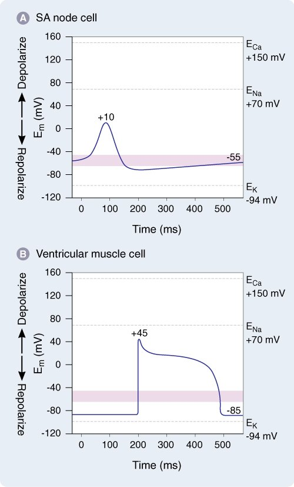
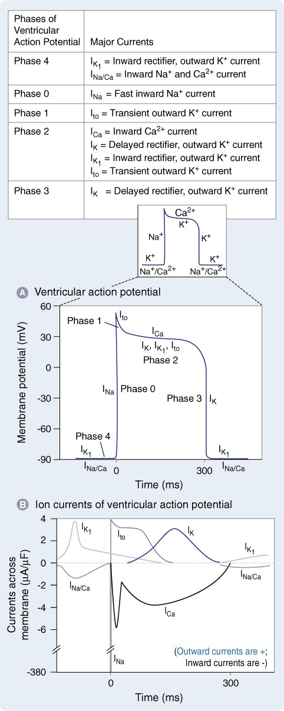
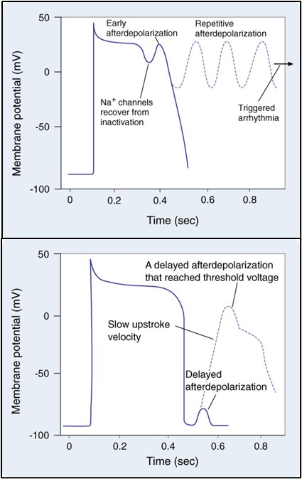
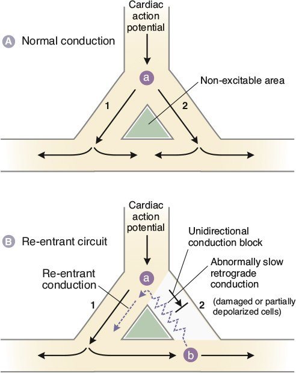
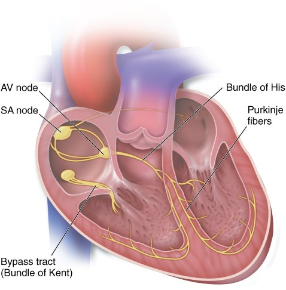
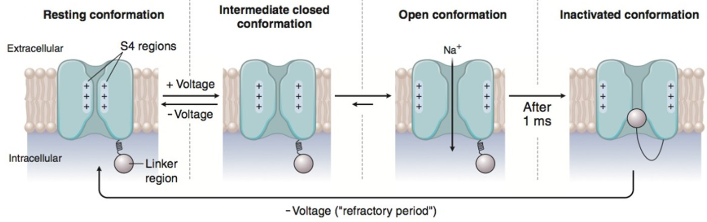

Slides 6–14 (10–14 hidden) · pacemaker vs non-pacemaker · β1 vs M2 · impulse formation and conduction defects
Action Potentials & How Arrhythmias Start
Pacemaker vs non-pacemaker cells
Pacemaker cells — automaticity
They depolarise above threshold rhythmically on their own.
- SA node · AV node
- Ventricular conduction system: bundle of His, bundle branches, Purkinje fibres
Non-pacemaker cells
Atrial and ventricular myocytes.
- In disease, these can acquire automaticity (ectopic beats).



- Which AP has a plateau? The myocyte's. It is a Ca²⁺ plateau that prolongs contraction to "get that good squeeze" for ejection.
- Why does the pacemaker cell have automaticity? The funny current (If), carried by Na⁺. It is "funny" because hyperpolarisation, not depolarisation, opens it.
- Phase 0: carried by Ca²⁺ in nodal cells and Na⁺ in myocytes. K⁺ repolarises both.
SA nodal cells (slide 8)
| Phase | What happens | Main current |
|---|---|---|
| 4 | Slow diastolic depolarisation | Inward If, carried mainly by Na⁺ |
| 0 | Upstroke | Inward Ca²⁺ current through voltage-gated Ca²⁺ channels (ICa) |
| 3 | Repolarisation | Outward K⁺ current (IK) |
Ventricular myocytes (slide 9)
| Phase | What happens | Main current |
|---|---|---|
| 4 | Resting membrane potential | Inward and outward currents equal (IK1 holds it) |
| 0 | Rapid depolarisation | Inward Na⁺ through fast Na⁺ channels (INa) |
| 1 | Early repolarisation (notch) | INa inactivates; K⁺ efflux through Ito |
| 2 | Plateau | Inward Ca²⁺ (ICa,L) balanced by outward K⁺ |
| 3 | Rapid repolarisation | Ca²⁺ current falls; outward K⁺ current rises |
How autonomic tone sets the rate
"S and I work on the same effector": both converge on adenylyl cyclase and therefore on PKA. Phosphorylating the proteins that traffic Ca²⁺ is how the heart changes contractility and conduction velocity.
What sets the firing rate (hidden slide 10)
- Steeper phase 4 → threshold reached sooner → faster firing.
- More negative threshold → reached sooner → faster.
- Less negative (more positive) resting potential → less time to repolarise fully → faster.
- The fastest pacemaker sets the heart rate: SA node 60–100/min · AV node and His 40–60/min · Purkinje 20–40/min. Board add-on (the slide leaves these blank)
Defects in impulse formation
Altered automaticity
SA rate = sympathetic vs parasympathetic balance. If disease slows the SA node, latent pacemakers take over. Damaged tissue that can't hold its ion gradients or loses gap junctions fires ectopic beats.
Early afterdepolarisations
Oscillations during repolarisation (or the plateau) of a prolonged AP. Repeated ones trigger an arrhythmia → torsades.
Delayed afterdepolarisations
Just after repolarisation. Intracellular Ca²⁺ overload drives the Na⁺/Ca²⁺ exchanger (3 Na⁺ in per Ca²⁺ out), which depolarises the cell.



Defects in impulse conduction
- Re-entry: a self-sustaining circuit re-excites the same myocardium again and again, fast. The AV node has a slow and a fast branch. If one recovers while the other is still refractory, the impulse runs back up and loops. Each lap sends a new impulse out, overdriving the SA node. Circuits can be tiny (AV nodal re-entry) or long (accessory pathway).
- Conduction block: the impulse fails to propagate (still-refractory tissue, or tissue damaged by trauma, ischemia or scarring). It can show up clinically as bradycardia.
- Accessory pathway — the bundle of Kent: conducts straight from atria to ventricles, bypassing the AV node, faster than the node → the set-up for re-entrant tachycardias (WPW).
State-dependent block (hidden slide 14)

Na⁺ channels cycle through resting → open → inactivated. Class I drugs have high affinity for the open and inactivated states. That makes the block use-dependent: the faster the tissue fires, the more block. Binding prolongs the refractory period, especially in ischemic tissue, where the channels are more active.
Q: Which ion carries phase 0 in an SA-node cell, and which carries it in a ventricular myocyte?
Ca²⁺ (L-type channels) in the SA node; Na⁺ (fast channels) in the myocyte. K⁺ repolarises both. That is why CCBs act on the node and Na⁺-channel blockers on muscle.
Q: β1 and M2 receptors both act on one enzyme. Which one, and through which G-proteins?
Adenylyl cyclase: β1 via Gs (↑ cAMP → PKA) and M2 via Gi (↓ cAMP).
Q: A delayed afterdepolarisation appears in a Ca²⁺-overloaded myocyte. What current depolarises the cell?
The Na⁺/Ca²⁺ exchanger working forward: it extrudes 1 Ca²⁺ for 3 Na⁺ in, a net inward (depolarising) current.